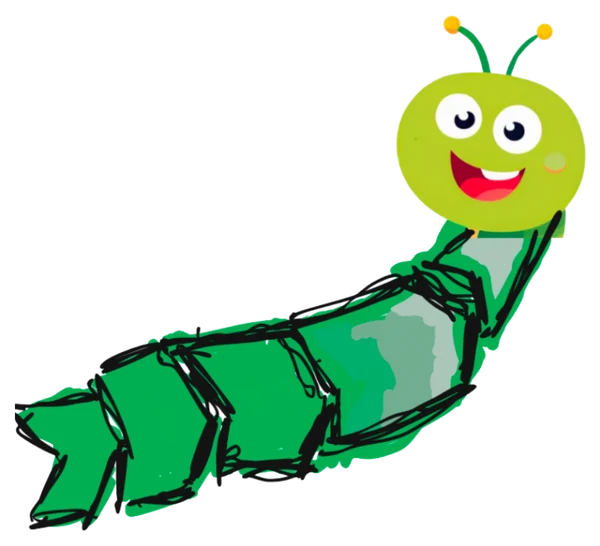
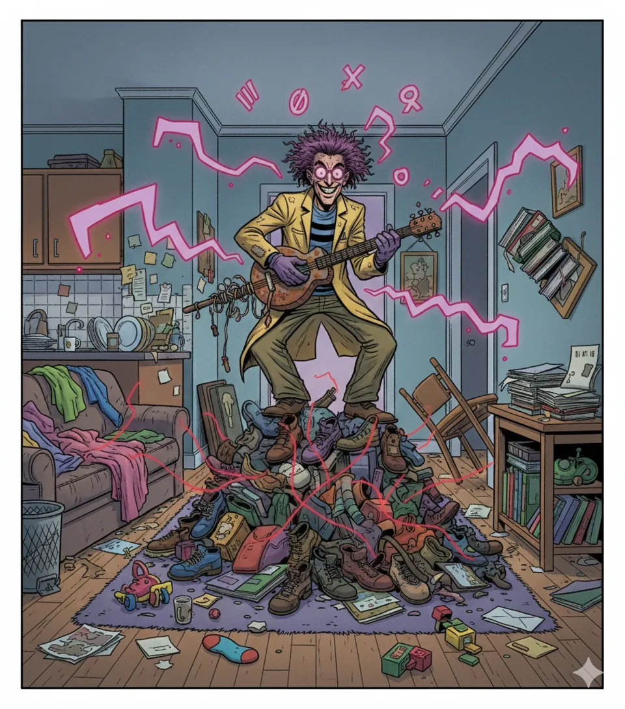
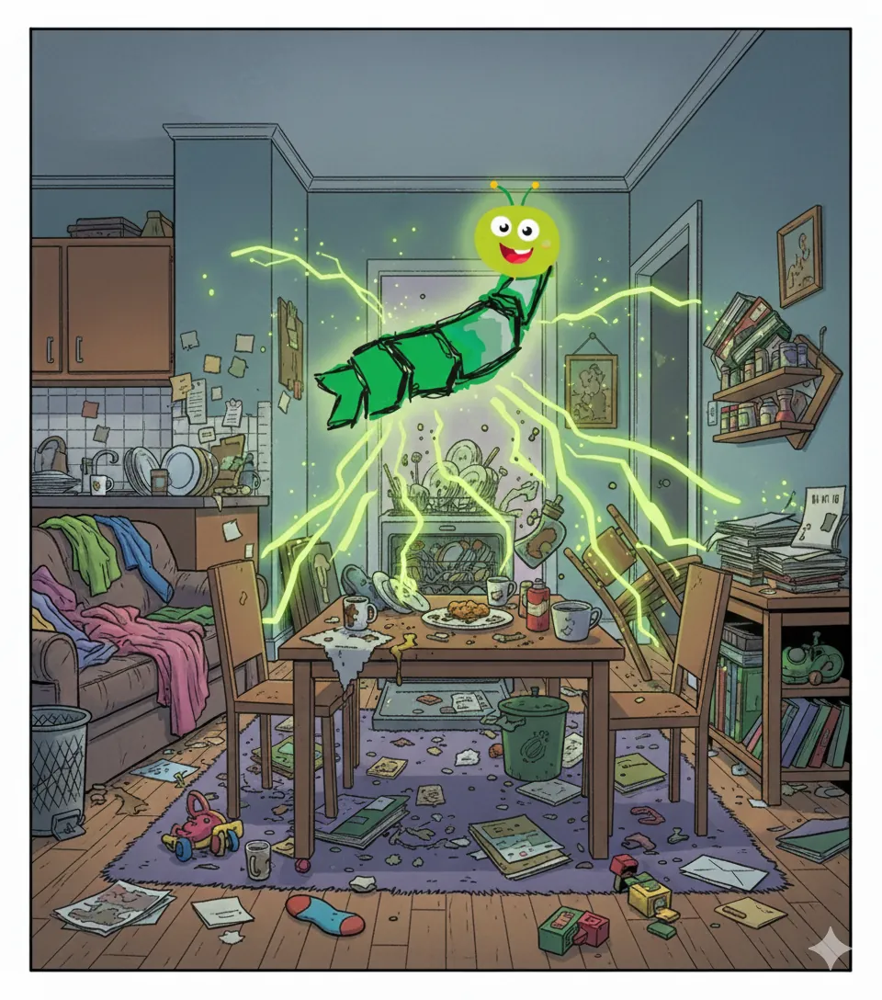

Über uns
Zwei Figuren, ein Ziel: Feierabend ohne Kopfschmerzen
Prozessmanagement klingt trocken. Muss es aber nicht sein. Hier erklären zwei Figuren, wie Abläufe leichter laufen: der eine mit Geduld, der andere mit Chaos.

Ordnung
Der Prozesswurm
Bodenständig, ruhig und neugierig. Statt mit Modewörtern zu glänzen, gräbt er sich in die Tiefe der unaufgeräumten Abläufe, bis Klarheit entsteht. Prozessmanagement soll so verständlich sein wie eine Folge der „Sendung mit der Maus“.
Seine Werkzeuge: gesunder Menschenverstand und KI als Turbo, die Menschen Routinearbeit abnimmt. Was er nicht mag: Phrasen, Besprechungen ohne Ergebnis und Abläufe, die nur aus Gewohnheit existieren.

Chaos
Doktor Kuddelmuddel
Das Gegenstück. Ein umständlicher Bremser, der sich gern als „Sicherheit“, „Tradition“ oder „Gründlichkeit“ tarnt. Seine Werkzeuge sind zusätzliche Abstimmungsrunden, Besprechungen ohne Ziel und Tabellen, die keiner versteht.
Bei jedem Thema fragt er: „Wozu brauch ich den Schmarrn?“ Und am liebsten sagt er: „Das haben wir schon immer so gemacht.“


Vorher Schon besser Mit KI erstelltDas ewige Duo
Noch kein Schmetterling
Doktor Kuddelmuddel ist nicht nur der Böse. Er deckt Schwachstellen schonungslos auf und sorgt dafür, dass alle merken: So geht es nicht weiter. Der Prozesswurm schaut sich die Trümmer an und baut daraus etwas Stabileres.
Schieb den Regler: Der Prozesswurm räumt auf. Schon viel besser, aber noch nicht perfekt, denn er kriecht noch. Perfekt laufen die Abläufe erst, wenn aus dem Prozesswurm ein Schmetterling wird.
Das Wissen dahinter
Die Figuren sind Comic. Die Erfahrung ist echt.
Hinter dem Prozesswurm steckt kein Lehrbuch, sondern die Arbeit aus über zehn Jahren Prozessmanagement. Was in den Lektionen steht, wurde im Alltag ausprobiert.
- Über 10 Jahreim Prozessmanagement, von der Technik bis zum Workshop mit den Menschen, die die Arbeit machen.
- 6 Jahre auf der IT-SeiteAnwendungen für Geschäftsprozessmanagement betreut und Fachbereiche bei der Nutzung beraten.
- 4 Jahre ProzessberatungProjekte geleitet: von der Neugestaltung ganzer Abläufe bis dahin, dicke Dokumente in schlanke, verständliche Inhalte zu verwandeln.
- KI im ProzessalltagViel Arbeit mit Chatbots und KI. Dazu aus eigenem Antrieb die Weiterbildungen zum operativen Prozessmanager und zum KI-Manager.
So arbeitet der Prozesswurm
Sechs Grundsätze aus der Praxis
- Erst die richtigen Fragen. Wer hat wann was genau zu tun? Mehr braucht es am Anfang oft nicht.
- Mit den echten Fachleuten reden. Mit denen, die die Arbeit machen, nicht mit denen, die sie verwalten. Und zuhören, auch wenn man den Ablauf zu kennen glaubt.
- Schritt für Schritt. Prozessmanagement braucht Zeit. Ein kleiner Schritt, der hält, ist mehr wert als ein großer Plan, der in der Schublade landet.
- Neutral bleiben. Wenn Bereiche seit Jahren streiten, erst mit allen einzeln reden. Will keiner die 51 Prozent übernehmen, wird der Ablauf geteilt und über klare Schnittstellen verbunden.
- Gemeinsam von A bis Z. Ablauf ausdrucken, an die Wand, mit allen Beteiligten Schritt für Schritt durchgehen. Das klärt mehr als jede Mail.
- Nie einfach ausrollen. Wer einen Ablauf ändert, nimmt die Menschen rechtzeitig mit: erklären, schulen, abholen. Nicht alles lässt sich technisch lösen.
Warum alles kostenlos ist
- Wissen gehört jedem.Lernwerkstatt, Lieder und Montags-Wurm sind kostenlos und ohne Anmeldung.
- Teilen ist erwünscht.Schick Links weiter, so oft du willst. Für Schulungen, Unterricht oder Beratung frag bitte kurz nach.
- Keine Datensammelei.Keine Cookies, keine Werbung, kein Google-Tracking.
Alle Bilder auf dieser Seite sind mit KI erstellt.